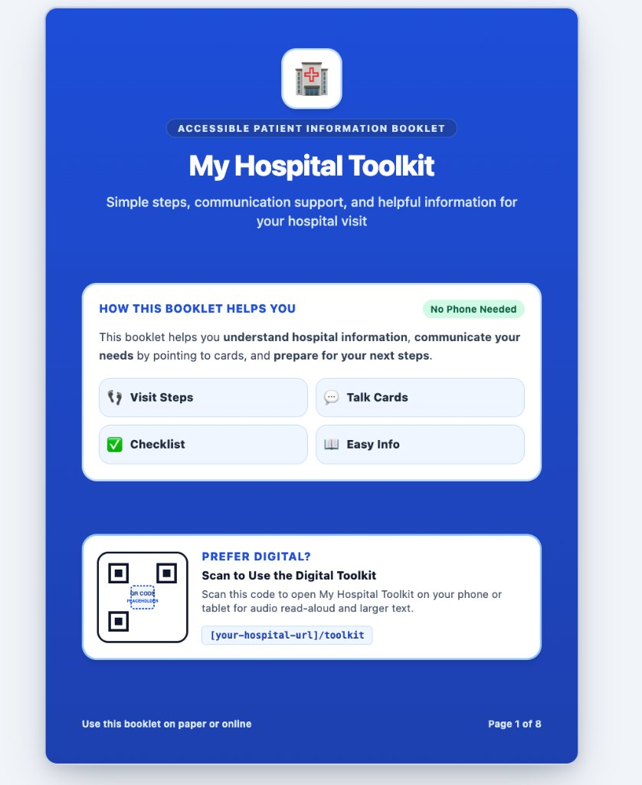
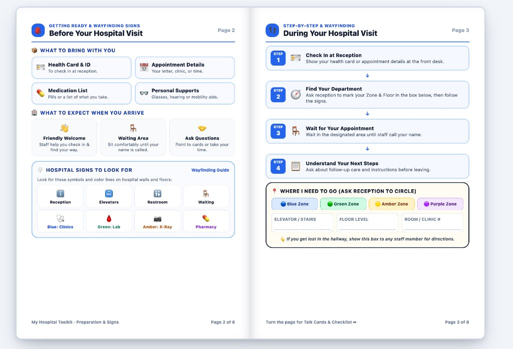

My Hospital Toolkit
An accessible 8-page patient information booklet and digital companion system grounded in survey research—designed to reduce hospital anxiety, support non-verbal & plain-language communication, and guide patients through every step of their visit.


Click any booklet page on this case study to inspect in full-screen high resolution
My Role
UX Researcher & Co-Designer (Group Project)
Research Methods
User Surveys, Literature Review & Journey Mapping
Deliverables
Physical Print Booklet & Digital Companion
Accessibility Focus
Plain Language, AAC Talk Cards & Wayfinding
Designing for Calm in High-Stress Healthcare Environments
Visiting a hospital is often an overwhelming, high-cognitive-load experience. Patients and support persons frequently navigate unfamiliar corridors, dense medical terminology, sensory overload, and time-pressured interactions with staff—all while feeling anxious or unwell.
Created as a collaborative group project, My Hospital Toolkit bridges the gap between physical and digital healthcare accessibility. In my role on the team, I led the user research and survey synthesis—identifying the real communication and wayfinding breakdowns patients face—and collaborated on designing the 8-page physical booklet and QR-linked digital toolkit so that every patient can access support whether they prefer paper in hand or audio and large-text tools on their phone.
My Contributions
- Primary & Secondary Research: Investigated healthcare communication barriers, cognitive load in clinical environments, and inclusive wayfinding standards.
- Survey Design & Analysis: Co-created and analyzed surveys to uncover what patients forget to bring, where they get lost, and what prevents them from asking questions.
- Information Architecture: Structured the 8-page booklet around the chronological patient journey (Before Visit → During Visit → Talk Cards & Checklist → Before Leaving).
- Physical + Digital Hybrid Design: Co-designed the print-ready booklet alongside the digital companion specifications (audio read-aloud, adjustable text, high-contrast mode).
What Our Surveys & Research Revealed
Before designing a single page, our group conducted surveys and secondary research to understand the real-world friction points patients experience before, during, and after a hospital appointment.
Verbal directions are quickly forgotten under stress
Survey respondents shared that when reception staff give rapid multi-step directions (elevator, floor, wing, room number), stress causes them to forget almost immediately in the hallway.
Speaking up is difficult when in pain or overwhelmed
Patients experiencing pain, sensory overload, language barriers, or speech differences reported hesitating to ask staff to slow down, repeat instructions, or write things down.
Digital-only tools exclude; paper-only lacks audio
Our research showed that relying solely on a smartphone app excludes older adults, low-battery visitors, or patients without data—while paper alone cannot provide audio read-aloud or dynamic text scaling.
Inside the 8-Page Physical & Digital Booklet
Flip through each spread below to explore how the booklet guides patients from pre-visit preparation to post-appointment follow-up.
Immediate Reassurance & Dual-Format Choice
The front cover sets a calm, authoritative, and welcoming tone using high-contrast royal blue and crisp white cards. Right at the top of the orientation card, a green "No Phone Needed" badge reassures patients that the physical booklet is 100% self-contained.
- 4 Visual Pillars: Visit Steps, Talk Cards, Checklist, and Easy Info.
- Digital Bridge: Dedicated QR code card for patients who prefer audio read-aloud and larger text on their phone or tablet.
Why We Designed Both Physical & Digital Formats
True accessibility means meeting patients in the medium that works best for their sensory, cognitive, and situational needs.
Physical Print Booklet (8 Pages)
Designed to be handed out at hospital reception desks, clinics, or mailed with appointment letters. Requires zero battery, zero Wi-Fi, and zero digital literacy.
- Tactile Pointing Support: Patients can physically point to Talk Cards or hold the booklet up to reception staff.
- Staff Co-Navigation: Receptionists can circle the patient's color zone (Blue, Green, Amber, Purple) and write the floor/room directly on Page 3.
- Glare-Free High Contrast: Matte paper layout with generous whitespace, clear section borders, and WCAG AAA contrast ratios.
Digital Companion Toolkit
Accessible instantly via the front and back cover QR codes (or short URL) without downloading an app—extending the booklet with assistive web capabilities.
- Audio Read-Aloud for Talk Cards: Tapping any Talk Card speaks the phrase aloud clearly for hospital staff, supporting non-speaking and low-vision users.
- Adjustable Large Text: Dynamic typography scaling so patients who forgot reading glasses or have low vision can read comfortably.
- High-Contrast Mode & Screen Reader Support: Semantic layout built for VoiceOver/TalkBack and customizable visual contrast.
Complete Booklet Spread Gallery
Click any spread below to open it in the full-screen Lightbox and zoom in to read the copy, icons, and layout details.
Pages 2 & 3 · Before & During Visit
Preparation, Signs & Zone Box
Pages 4 & 5 · Talk Cards & Checklist
Visual Communication & Tasks
Pages 6 & 7 · Easy Info & Notes
Self-Advocacy Tips & Questions
Page 1 · Front Cover
Overview & Digital QR Code
Page 8 · Back Cover
Staff Assistance & Digital Access
Reflection & Impact
Leading the research and survey analysis for My Hospital Toolkit reinforced one of my core beliefs as an accessibility designer: the most inclusive solutions don't force users into a single technological lane.
By listening to how real patients experience stress in waiting rooms and corridors, our group realized that a physical booklet and a digital toolkit are strongest when designed together. A patient can hand the physical Page 3 zone box to a receptionist, point to a Talk Card on Page 4, or scan the cover QR code to hear those same cards spoken aloud—turning a stressful clinical visit into a calmer, more human experience.